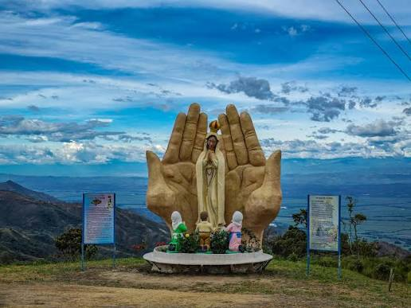

Puertas del Sol
Ofrece una vista panorámica del Valle del Cauca, además de zonas de descanso, cabañas, piscina y tobogán de colores. En su restaurante puedes probar el tradicional migao y pan de queso.
Tres lugares para ver Trujillo y el Valle del Cauca desde arriba, cada uno con su propio plan.

Ofrece una vista panorámica del Valle del Cauca, además de zonas de descanso, cabañas, piscina y tobogán de colores. En su restaurante puedes probar el tradicional migao y pan de queso.

Actividades al aire libre y de aventura: tirolesa, columpio 360°, cabalgatas guiadas y un mirador hacia las montañas. Tiene minigranja, restaurante campestre y zona de glamping.

Hospedaje campestre con planes de pasadía, gastrobar y restaurante mirador de comida típica colombiana. Cuenta con piscina infinita, senderos ecológicos, zonas verdes y juegos infantiles.